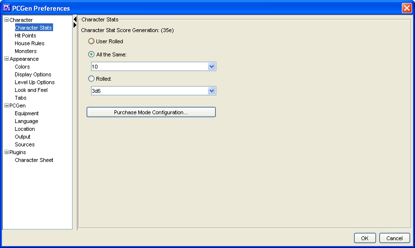

The Ability scores menu allows the user to choose what method that PCGen will use to determine how to build the PC.
The User Rolled option allows you to roll up the stats using dice, and then manually enter the results into PCGen.
The All the Same option will set all of the stats to the value you select in the dropdown.
The Purchase Mode menu allows the user to call up the Purchase Mode Window and define their own Purchase Mode Methods.
*** New 5.9.3
If Random dice rolling methods have been added to the miscinfo.lst file in the gameMode then an additional menu will appear allowing you to select one of those methods to generate random stats. When chosen a button labeled Roll will appear on the summary Tab and clicking it will regenerate your ability scores using the selected rolling method. To add your own dice rolling methods see the ROLLMETHOD tag entry for miscinfo.lst files for details.